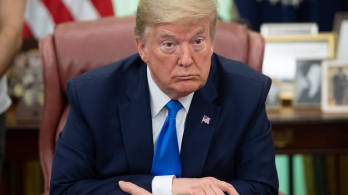

Trump again casts doubt on whether he'll accept election result in latest unfounded attack on voting process
Washington (CNN)President Donald Trump said Thursday that he's not sure November's election will be "honest" because of the use of unsolicited ballots, extending his baseless assertion that widespread mail-in voting is rife with fraud and again casting doubt on if he will accept the results of the election. "We have to be very careful with the ballots, the ballots, that's a whole big scam," Trump falsely told reporters before departing the White House on Thursday, referring to unsolicited mail-in ballots that only nine states and Washington, DC, provide. The November contest, he said, needs to be "honest," adding that, "I'm not sure that it can be, I don't know that it can be with this whole situation, unsolicited ballots, they're unsolicited, millions being sent to everybody." The President's comments come as he continues to lean into a conspiratorial message around the US voting process and build on his pointed refusal Wednesday to commit to providing a peaceful transition of power after Election Day. "Well, we're going to have to see what happens," Trump said when asked whether he'd commit to a peaceful transition, one of the cornerstones of American democracy.He has previously refused to say whether he would accept the election results, echoing his sentiments from 2016 that he'll "have to see." And Trump has joked -- he says -- about staying in office well past the constitutionally bound two terms.
More...